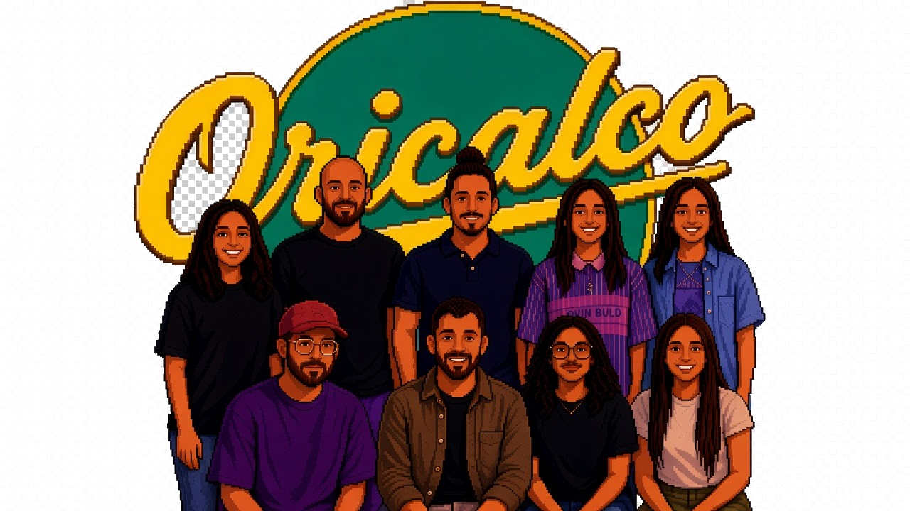

OricalPedia
Plataforma Interna de Ensayos
Tracks
Letras
Partituras
🎸 Ver Lista de Temas

🎵 Seleccioná un Tema
La Constante
La Danza
Rancio
Trance
A Prueba y Error
Bazar Eterno
Siempre Seras
Parecido al Amor
Otra Vez
Jardin de Paz
Estante
← Volver a la lista
🎧 Reproductor Multitrack
▶ Reproducir / Pausar
🎛️ Control de Canales (Stems)
🎤 Voz
🎸 Bajo
🎸 Instrumentos / Otro
🥁 Batería
📜 Letras de los Temas
Próximamente: Las letras de los temas para repasar.
🎼 Partituras y Anotaciones
Próximamente: Acordes, tablaturas y notas de ensayo.